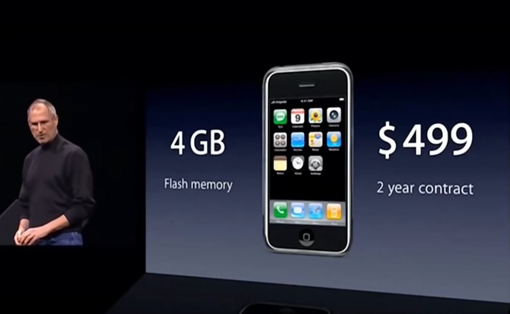
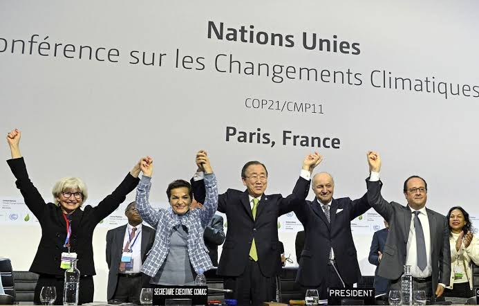
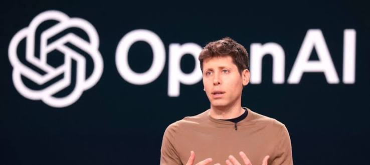

11-s y nacimiento de wikipedia
Invento / Hito: Wikipedia
Año: 2001
Creadores: Jimmy Wales - Larry Sanger
Categoria: Conocimiento Libre y Web 2.0
Revolución del conocimiento colectivo que creó la enciclopedia en línea libre y colaborativa más grande de la historia.
Acontecimiento / Hito: Atentados del 11-S
Año: 2001
Categoria: Geopolítica y Tecnología de Seguridad
Evento histórico que transformó la geopolítica mundial e impulsó una acelerada evolución en las tecnologías de vigilancia, aviación y ciberseguridad.
El euro entra en circulacion
Acontecimiento / Hito: El Euro (€)
Año: 2002
Categoria: Economía y Finanzas Digitales
La mayor conversión monetaria de la historia, que unificó la moneda física y digital de millones de ciudadanos europeos e impulsó la infraestructura bancaria electrónica.
Lanzamiento del primer iphone

Invento / Hito: iPhone (1ª Generación / 2G)
Año: 2007
Empresa Creadora: Apple (presentado por Steve Jobs)
Categoria: Telefonía Móvil y Computación Personal
Revolucionó la telefonía al combinar un teléfono móvil, un iPod con pantalla multitáctil y un navegador web de clase de escritorio en un solo dispositivo.
Crisis financiera global
Acontecimiento / Hito: Crisis Financiera Global / Caída de Lehman Brothers
Año: 2008
Categoria: Economía Global y Tecnologías Financieras (Fintech)
La peor recesión económica mundial desde la Gran Depresión, originada por el colapso del mercado hipotecario subprime en EE. UU., que impulsó el nacimiento de nuevas tecnologías financieras.
Primavera arabe y redes
Acontecimiento / Hito: Primavera Árabe
Año: 2011
Categoria: Redes Sociales y Activismo Digital
Serie de levantamientos populares en el norte de África y Oriente Medio donde plataformas como Twitter y Facebook se convirtieron en herramientas clave de organización y movilización social.
Acuerdo de París por el clima

Acontecimiento / Hito: Acuerdo de París
Año: 2015
Categoria: Sostenibilidad y Tecnología Verde (CleanTech)
Histórico tratado internacional legalmente vinculante sobre el cambio climático, firmado por 195 países para limitar el calentamiento global y acelerar la transición hacia energías limpias.
Pandemia mundial Covid-19
Acontecimiento / Hito: Pandemia de Covid-19
Año: 2020
Categoria: Biotecnología y Transformación Digital
Crisis sanitaria global que transformó de la noche a la mañana la dinámica social e impulsó la mayor aceleración digital y biotecnológica de la historia.
Despliegue publico de ChatGPT

Invento / Hito: ChatGPT (OpenAI)
Año: 2022
Categoria: Inteligencia Artificial Generativa
El lanzamiento accesible que democratizó el uso de la Inteligencia Artificial al público general, marcando el inicio oficial de la era de la IA generativa.